my.goetheanum im Einsatz
Die gewählte Fassung — Kleinschreibung, Icon im Kreis, Schnitt Deutlich (580) — auf ihren Gründen und in den Umgebungen, in denen sie leben wird: hell und dunkel, gross und klein, auf der Webseite und in der App.
Auf den Gründen
Hell trägt Blau, alles andere trägt Weiss. Kontraste sind gerechnet, nicht geschätzt.
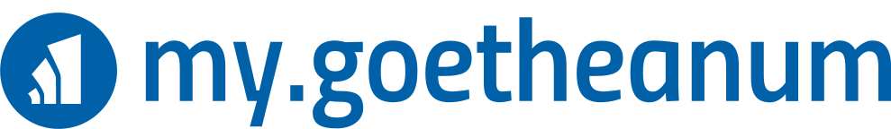
Gross und klein
Eine Datei, jede Grösse — Vektor. Unter etwa 120 Pixel Breite übernimmt das Kreis-Icon allein.
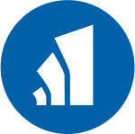
Die Mitte-Fassung im Vergleich
Der Kreis als Bindeglied zwischen den Wörtern, neben der vorangestellten Fassung — auf heller und dunkler Bühne, wie im Logo-Werkzeug.
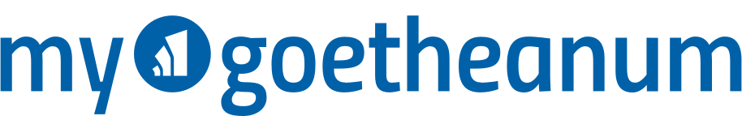
Die Mitte-Fassung macht das Zeichen zum Teil des Namens — stark im grossen Auftritt. Wo das Icon allein stehen muss (Kachel, Avatar, Favicon) oder der Platz schmal wird, trägt die vorangestellte Fassung.
Vier Sprachen, zwei Fassungen
Das ‹my› wird übersetzt, der Rest bleibt: gleicher Kreis, gleiche Metrik, gleiche Abstände. Links das Icon am Zeilenanfang, rechts als Bindeglied in der Mitte.
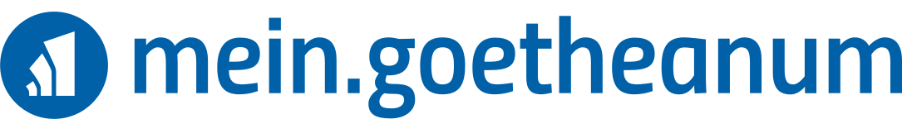
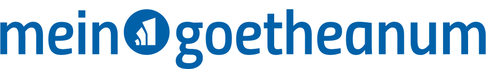
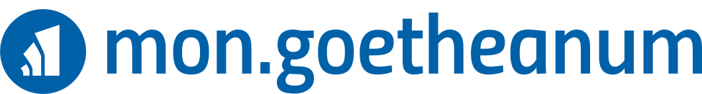
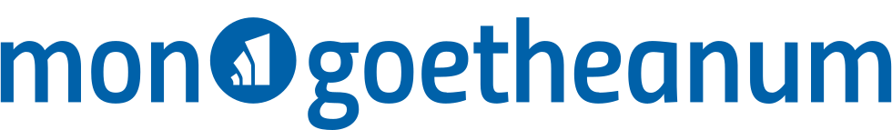
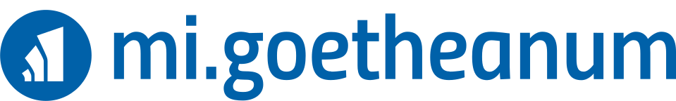
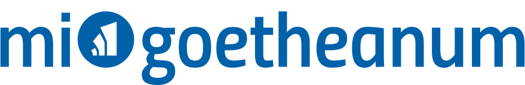
Auf der Webseite
Kopfzeile mit dem Logo in Kopfzeilen-Grösse; im Dunkelmodus wechselt die Fassung.
Mein Goetheanum, ein Ort.
Kurse und Tickets, Mitgliedschaft und Spenden, Beiträge und Post — alles Persönliche an einer Adresse, mit einem Konto.
In der App
Links der Auftritt auf dem Home-Screen — das Kreis-Icon ist die Kachel. Rechts die App selbst mit dem Logo im Kopf.
Dateien: Original Blau · Weiss für dunkle Gründe · Kreis-Icon einzeln · Mitte-Fassung Blau · Mitte-Fassung Weiss. Wortmarke aus den Generator-Glyphen im Schnitt Deutlich (580), Metrik des Hauptlogos; alle weiteren Fassungen im Logo-Werkzeug.
{kind=link}
{kind=link}
{kind=link}
{kind=link}
{kind=link}